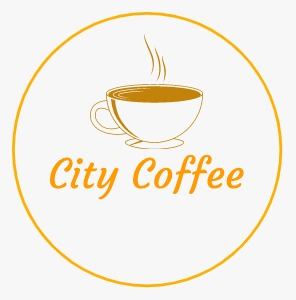

Servicios

Double Expreso es un cafe con mucho cuerpo y un aroma intenso proveniente de un grano que se extrae en las regiones bajas de Etiopia
Capuccino Star se trata de una receta que convina la tecnica italiana del la receta original junto con la mezcla de leche de almendras y un toque de orquidea.
EL Irlandes es otro refente de nuestra casa, elaborado con grano dulce de panama y cimentado en una mezcla de wisky de malta triplemente destilado
Proyectos
Curso De Barista Internacional
Te invitamos a formarte en una de las areas mas demandadas a nivel mundial durante 24 semanas,te
ofrecemos capacitacion, mentoria y practicas en los mejores cafes de francia de la mano de nuestros
profesionales.
¿Que incluye el programa?
Traslado desde el aeropuerto,alojamiento en una de nuestras residencias estudiantiles en Paris;
en ellas podras compartir con estudiantes de todo el mundo,constamos con servicio de
lavanderia y cafeteria,salas de recreacion, gimnasio y salidas
los fines de semana a lugares interesantes entre otros.
Cabinas Sanetizadas
En esta etapa pandemica hemos adquirido cabinas sanetizadas equipadas con un nebulizador para la pulverizacion de liquidos para que puedas compartir con tus seres amados en un ambiente agradable y seguro.
